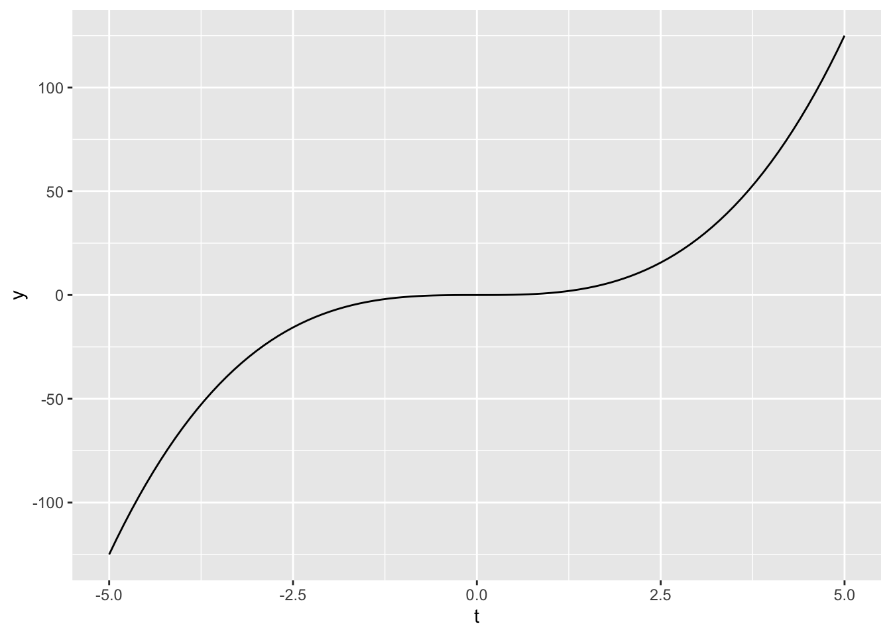

End interactive session 2B
3 * x^2 + 4\[f(a, z, t)=3at^2-4t+5.1az-z^3\]
\(\frac{\partial f}{\partial a} = 3t^2 + 5.1z\)
\(\frac{\partial f}{\partial z} = 5.1a - 3z^2\)
\(\frac{\partial f}{\partial t} = 6at - 4\)
\[B(h, T)=0.6Th+2.1h^2\] For water at 28 degrees, find an expression for how biomass is changing with respect to time (\(\frac{\partial B}{\partial h}\)).
\(\frac{\partial B}{\partial h}=0.6T + (2)(2.1)h\)
\(\frac{\partial B}{\partial h}=(0.6)(28) + 4.2h\)
\(\frac{\partial B}{\partial h}=16.8 + 4.2h\)
\[G(t)=2.2 + 3.1t-5.6t^4 + \frac{4.3}{t^3}\]
First derivative:
\(G'(t) = 3.1 -(4)(5.6)t^3 +(-3)(4.3)t^{-4}\)
\(G'(t) = 3.1 -22.4t^3 -12.9t^{-4}\)
Second derivative:
\(G''(t) = 3.1. - (22.4)(3)t^2 -(12.9)(-4)t^{-5}\)
\(G''(t) = 3.1. - 67.2t^2 -(12.9)(-4)t^{-5}\)
\(G''(t) = -67.2t^2 + 51.6t^{-5}\)
Third derivative:
\(G'''(t) = -(67.2)(2)t + (51.6)(-5)t^{-6}\)
\(G'''(t) = -134.4t - 258t^{-6}\)
{ggplot2}day2b-exercises.qmd) to your existing eds212-day2-GHpractice repository and follow along with the exercises, below.In the code chunk below, we create an R function to plot the function, \(f(x) = 3x^2 + 4\). We can use a nifty keyboard shortcut to create a R function around this expression following these steps:
3 * x^2 + 4Highlight the expression, then use the keyboard shortcut control + option + X (Mac) or Ctrl + Alt + X (Windows) to pop open a dialog box, which will prompt you to provide a name for your function (you can call it eq1).
Watch your function appear! The shortcut will automatically add any variables from the body of your function (here, just x) as arguments inside function():
eq1 <- function(x) {
3 * x^2 + 4
}# load packages ----
library(tidyverse)
# Define function ----
eq1 <- function(x) {
3 * x^2 + 4
}
# create data frame with range of values to evaluate function over ----
my_data_range <- data.frame(x = c(1, 100))
# Plot it as a continuous curve over a specific range using `geom_function()` ----
# `geom_function()` automatically evaluates the function over the range of x-values specified in the df and adds the resulting y-values to the plot
ggplot(data = my_data_range, aes(x = x)) +
geom_function(fun = eq1)
# Define function ----
eq2 <- function(x) {
2.4 - 5*x^3 + 2.1*x^2
}
# Plot it as a continuous curve over a specific range using `geom_function()` (here, we define our data frame directly inside `ggplot()` ----
ggplot(data = data.frame(x = c(-50, 50)), aes(x = x)) +
geom_function(fun = eq2)
Let’s look at the function: \(C(t)=t^3\)
Let’s plot the function along with the first derivative:
# Store the function C(t) ----
ct <- function(t) {
t^3
}
# create data frame with range of values to evaluate function over ----
my_data_range <- data.frame(t = c(-5, 5))
# Plot it ----
ggplot(data = my_data_range, aes(x = t)) +
geom_function(fun = ct)
# Find the derivative ----
dc_dt <- D(expr = expression(t^3), name = "t")
dc_dt3 * t^2# Store the derivative as a function ----
dc_dt_fun <- function(t) {
3 * t ^2
}
# Then plot them together ----
ggplot(data = my_data_range, aes(x = t)) +
geom_function(fun = ct, color = "red") +
geom_function(fun = dc_dt_fun, color = "blue")
Specify the variable you want to take the derivative with respect to.
\[f(x,y,z)=2xy-3x^2z^3\]
Find all partials, \(\frac{\partial f}{\partial x}\), \(\frac{\partial f}{\partial y}\) and \(\frac{\partial f}{\partial z}\)
# Create the expression ----
f_xyz <- expression(2 * x * y - 3 * x^2 * z^3)
# Partial with respect to x ----
df_dx <- D(expr = f_xyz, name = "x")
df_dx2 * y - 3 * (2 * x) * z^3# Partial with respect to y ----
df_dy <- D(expr = f_xyz, name = "y")
df_dy2 * x# Partial with respect to z ----
df_dz <- D(expr = f_xyz, name = "z")
df_dz-(3 * x^2 * (3 * z^2))Given the function: \[P(q)=2cos(3q+0.4)-5.6e^{1.4q}\]
Find the instantaneous slope at \(q = 0.8\).
# First, create the expression ----
pq <- expression(2 * cos(3 * q + 0.4) - 5.6 * exp(1.4 * q))
# Find the first derivative with respect to q ----
dp_dq <- D(expr = pq, name = "q")
# Return the first derivative ----
dp_dq-(2 * (sin(3 * q + 0.4) * 3) + 5.6 * (exp(1.4 * q) * 1.4))# Define value of q ----
q <- 0.8
# Evaluate dp_dq at that value ----
eval(dp_dq)[1] -26.03839Follow the same pattern that we practiced in today’s earlier interactive session (2A), and verify that it worked by checking out your GitHub repo.
End interactive session 2B